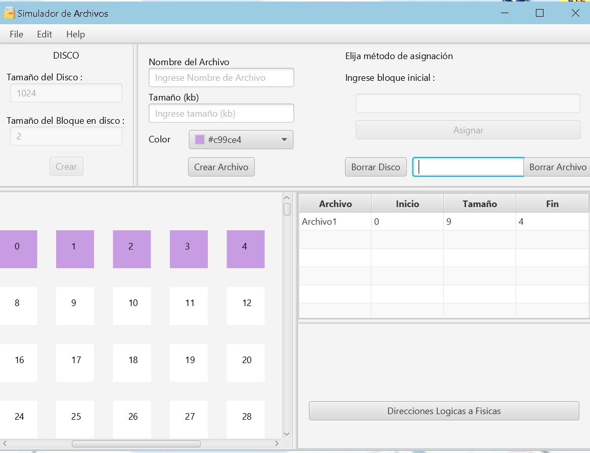

Bienvenido en este manual aprenderas a usar el simulador de sistema de archivos
Al comenzar la primera imagen del
simulador que veras es la siguiente:
Pantalla de default que se
muestra al usuario
Ahora es importante definir
tres elementos importantes:
Linea azul campo de informacion de disco
Linea morada información de archivo
Linea verde selección de metodo de
asignación: contigua, vinculada (listas
enlazadas) e indexada
Instrucciones de uso:
Asignación contigua:
Iniciaremos con el metodo de
asignación contigua:
Iniciaremos llenando los datos del
disco y lo crearemos
Ahora llenaremos los datos del
archivo
Elejimos un color
Elegiremos un metodo de asignación
en este caso sera "Contigua". Indicaremos el
bloque inicial, y finalmente se nos reflejara un
mensaje de confirmación
Finalmente se nos mostrara los
bloques de disco de manera contigua

Asignación vinculada
Iniciaremos llenando los datos del
disco y lo crearemos
Ahora llenaremos los datos del
archivo
Elejimos un color
Seleccionamos el metodo de
asignación "vinculada" e ingresamos el nodo
inicial
Como se trabaja con listas
enlazadas, aqui los bloques se asignaran de tal
manera que cada bloque contiene un puntero al
siguiente bloque que se asigna al archivo
Finalmente se nos mostrara los
bloques de disco de manera vinculada, asi como
tambien una tabla con el nombre del archivo,
inicio, tamaño y fin
Tambien podemos visualizar la FAT
al darle click en la opción
Al igual que la tabla de i-nodos
Asignación indexada
Iniciaremos llenando los datos del
disco y lo crearemos
Ahora llenaremos los datos del
archivo
Elejimos un color
Seleccionamos el metodo de
asignación "indexada" e ingresamos el nodo
inicial con sus enlaces
Damos click en asignar y
finalmente
se nos mostrara los
bloques de disco de manera indexada, asi como
tambien una tabla con el nombre del archivo,
inicio, tamaño y fin